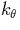
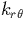
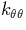
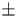
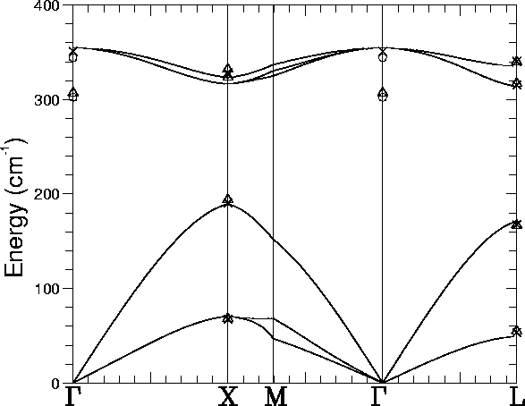

After relaxation, we obtained central InP bond lengths of 2.480Å along the  111
111 axis parallel to the C3v axis,
and 2.421Å otherwise (an error of 2.4% and 4.7% respectively, as
the experimental bond length is 2.54 Å[49]). The bond
elongation in the (111) direction is due to the intrinsic dipole
moment of a bond centred cluster. The nearest neighbour P-In-P bond
angle was 111.5
axis parallel to the C3v axis,
and 2.421Å otherwise (an error of 2.4% and 4.7% respectively, as
the experimental bond length is 2.54 Å[49]). The bond
elongation in the (111) direction is due to the intrinsic dipole
moment of a bond centred cluster. The nearest neighbour P-In-P bond
angle was 111.5 , and 107.3
, and 107.3 when using the In-P bond
parallel to the C3v axis; these are within 2
when using the In-P bond
parallel to the C3v axis; these are within 2 of the
tetrahedral angle.
of the
tetrahedral angle.
| Atom | kr |  |  | krr |  |
| In | 7.187 | 0.088 | -0.125 | 0.283 | 0.013 |
| P | 7.187 | 0.154 | -0.156 | 0.917 | 0.065 |
We next fitted the Musgrave Pople potential to the derivatives for the inner eight atoms (this is described further and the potential given in Section 2.8.2). The coefficients are shown in Table 4.1.
| Location | Mode | Neutron | Raman | Far I.R. | Theoretical |
| Diffraction | Scattering | ||||
| (300K)[63] | (300K)[64] | (20K)[65] | |||
| LO | 345.4 | 351 | 354.80 | ||
| TO | 307  7 | 303.3 | 354.80 | ||
| X(1,0,0) | LO | 332 3 | 328.5 | 324.59 | |
| TO | 324 7 | 326.5 | 317.46 | ||
| LA | 194 10 | 190.5 | 186.86 | ||
| TA | 68 3 | 67.5 | 69.59 | ||
| L(,,) | LO | 340 10 | 340.5 | (5,6) 335.27 | |
| TO | 317 5 | 315.5 | (4) 314.03 | ||
| LA | 167 3 | 167.5 | 171.19 | ||
| TA | 55.0 0.7 | 53.5 | 49.49 |
|  |
A supercell calculation of the full phonon dispersion curve was
performed using the Musgrave-Pople interatomic potential. This is
given in Figure 4.2 along with various experimental
values. Selected values from this curve are given in
Table 4.2. We do not obtain any LO-TO splitting because
of an absence of long range electric field effects in the potential.
The highest bulk phonon modes are 354.80 (351), 324.59 (328.5), and
335.27 cm-1 (340.5) at  , X, and L respectively (the
experimental modes are in brackets[65], at 20K), thus our
frequency errors are 4 cm-1. The calculated band gap
for InP was 0.84 eV, compared to an experimental value of 1.34 eV
deduced from optical data[66], and is in good agreement
with a previous LDF value of 0.8 eV[67] (see Section
4.2 above). Our calculated band gap is underestimated, which
is unusual for a cluster calculation.
, X, and L respectively (the
experimental modes are in brackets[65], at 20K), thus our
frequency errors are 4 cm-1. The calculated band gap
for InP was 0.84 eV, compared to an experimental value of 1.34 eV
deduced from optical data[66], and is in good agreement
with a previous LDF value of 0.8 eV[67] (see Section
4.2 above). Our calculated band gap is underestimated, which
is unusual for a cluster calculation.
We conclude that our method gives bond lengths and local vibrational modes within an acceptable error range.